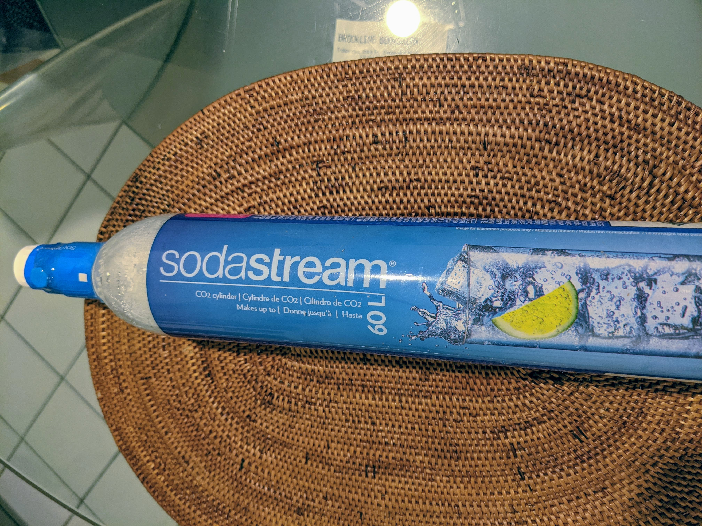
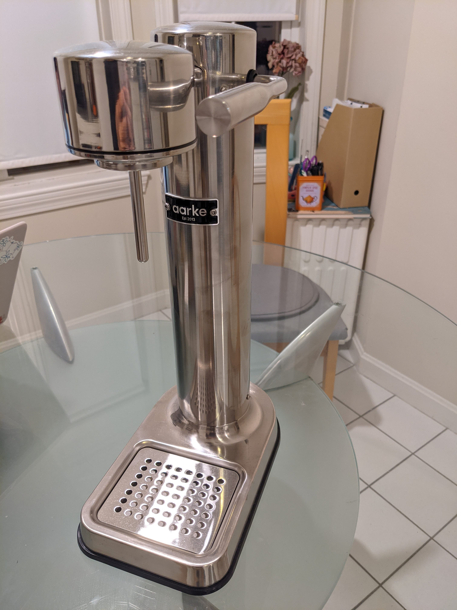

Table of Contents
1 はじめに
日曜日からDaylight saving timeが終わって、標準時間(ボストンはEastern Standard Time)になりました。Daylight saving timeは夏時間とも呼ばれますが、1年のうち8ヶ月くらいが夏時間で、標準時間は4ヶ月程度しかないんです。ちょっと意外です。
2 炭酸水について
うちでは結構炭酸水を飲みます。これまでは主にPerrierの500mlx24本セットをAmazonで購入していたのですが、価格変動が激しく、すぐに品切れになるのが頭痛の種でした。一番安いときは$15くらい、普通で$18、高いと$22〜23になります。AmazonのPerrier直営から買っているのに、不思議です。
なるべく安い時にまとめ買いするのですが、場所を取るのでせいぜい1セット余計に買っておくくらいしかできません。残りが少なくなってきたら、連日Amazonで価格ウォッチして、なるべく安くなった時に買うことを繰り返していました。しかし、品切れの期間が長く、$20オーバーで買う羽目になることもあって、地味にストレスが溜まります。
また、毎日1,2本消費するため、ペットボトルゴミが大量に出ます。リサイクルするとはいえ、環境に悪そうです。
3 SodaStream
そこで、炭酸水を自分で作る sodastream を試してみることにしました。SodaStreamは二酸化炭素の充填されたシリンダーを販売、リフィルするビジネスを展開しているイスラエルの会社です。日本でも一部で有名ですね。

使い終わったシリンダーは郵送で送り返すか、協力店に持ち込むなどして、有償でリフィル済みのシリンダーと交換してもらいます。シリンダーの購入は$30、リフィルだと$15(+送料)くらいです。
シリンダー1本で20〜60リットル(炭酸の強さによる)の炭酸水が作れるので、ランニングコストはPerrierを買い続けるよりも低くなります。1プッシュで微炭酸、2プッシュで普通、3プッシュで強炭酸、という感じです。うちは2プッシュくらいが好みなので、シリンダー1本で30l作れる計算になります。
初期投資として、炭酸水メーカーの機械が必要で、ここを何にするか(と、どのくらいの炭酸の強さが好みか)で、何年間でもとが取れるかが決まってきます。
炭酸化できるのは水だけです。ジュースやワインの炭酸化を楽しみにしていたのですが、Carbonator 3のマニュアルにはっきりと駄目と書いてありました。残念です。
4 Aarke Carbonator 3
炭酸水メーカーアプライアンスとして、うちは家族の希望で、スウェーデン企業 aarke の Carbonator 3 を購入しました。$220もする、若干高級品寄りの製品で、もとを取る気があまり感じられません。。。

Carbonator 3はステンレス製でプラスチッキーなところが無く、なかなか高級感があります。炭酸の圧力だけで動作し、電気は使いません。作りはいたってシンプルで、壊れる箇所も少なそうです。
ガスの注入はレバーで行いますが、どの程度注入するか、勝手が良くわかりません。何度もやっていると慣れますが、最初に作ったときはレバーを下げたまましばらく放置したため、かなり炭酸が強くなってしまいました。
5 SodaStreamは安いのか
コスパが良いという触れ込みのSodaStreamですが、飲む量が増えたり高めのアプライアンスを買ったりしていて、そもそももとが取れるのでしょうか。計算してみます。
5.1 Perrierの場合
500mlx24本セットを$18で購入するとします。毎日1,2本飲むので平均とって1.5本/日として、$18/24本 * 1.5本/日 * 30日/月 * 12ヶ月/年 = $405/年の計算になります。あれ、計算してみると意外と高いですね。
5.2 Carbonator 3 + SodaStream
シリンダーリフィルの送料を浮かす(4本まとめると無料になる)ために、4本購入($65/2本)してリフィル($15/本)を繰り返すことを想定します。シリンダー1本で30l作れ、これまでのところ毎日1l消費しているため、月あたり丁度シリンダー1本消費することになります。初年度は初期投資が必要なので、、、 $220 + $65x2(4ヶ月分ガス含む) + $15x8(残り8ヶ月) = $470
2年目以降はリフィルだけとして、 $15x12 = $180
意外にも、単純比較では、1年と数ヶ月でもとが取れる計算となりました。
6 炭酸水の品質
うちでは水道水そのままではなく、ブリタの浄水器で作った水に炭酸を注入しています。それでも、炭酸水の味に少し癖を感じます。ブリタで浄水した水自体の癖はあまり気にならないのですが。個人的にはPerrierやSan Pellegrinoの方が好きな味です。
炭酸化する際のレバー1プッシュだとSan Pellegrinoよりも更に弱い炭酸になりました。2プッシュでPerrierより少し弱いくらい。Carbonator 3はレバーを引いている時間で強度の調節ができそうです。そのうち自分たちの好みの強さになっていくと思います。
7 その他比べてみて
手間はSodaSteamの圧勝です。重い炭酸水を運ぶ必要はなく、ゴミもあまり出ません。シリンダーの郵便での受け渡しが面倒ですが、4ヶ月に一度くらいなら我慢できる程度です。Aarkeの専用ボトルは毎回軽く水洗いしますが、元々入っているのが水なので、大して汚れません。
いろいろな炭酸水が飲めるという点では、PerrierやSan Pellegrinoの方が自由度が高いです。SodaStreamで作った(だけじゃないですが)炭酸水に入れるシロップ類も売っているようですが、専用ボトルに味が付きそうで試していません。ボトルからグラスに入れるタイミングでシロップを入れてもいいですが。
8 まとめ
- 味はPerrierやSan Pellegrinoの勝ち(好みの問題?)
- コストはSodaStreamが優れている。私達の場合、1〜2年でもとが取れる
- 手間はSodaStreamの勝ち
- AarkeのCarbonator 3は高級感があり、満足度が高い(好みの問題)
- ジュース等の炭酸化はできないので引き分け
結論として、味が許容できれば、年単位で使用するという前提で、SodaStreamに軍配が上がると思います。